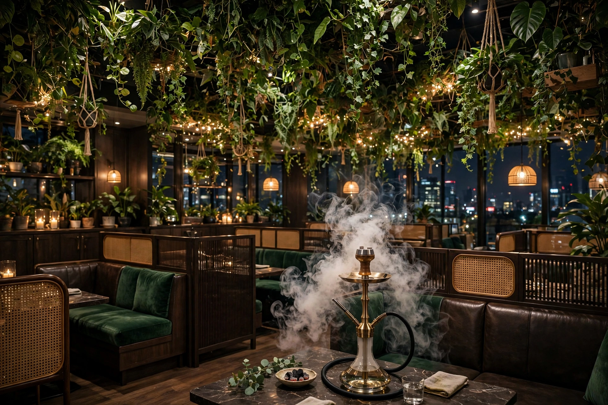

宗右衛門町ドン・キホーテ横、天井高4mの空間に観葉植物が茂る大人の隠れ家。フレーバー25gの本場ロシア式シーシャと、本格スイーツで過ごす深夜のカフェ＆バーです。
※写真はイメージです
フレーバーを25g使う本場ロシア式。濃厚で爆煙な煙の質感は、半数以上がリピーターになるという支持につながっています。
至高のカヌレ、アサイーボウル、濃厚なグリークヨーグルト、アップルパイまで。カフェ利用だけでも歓迎です。
半個室・完全個室あり。Wi-Fi完備、充電もできて、紙タバコも可。終電を逃した夜の居場所にもなります。
限定フレーバーや日々のお知らせは、公式Instagramで発信しています。
Instagramを見る| 店名 | シーシャカフェ＆バー翠煙/スイエン 大阪難波道頓堀店（shisha cafe & bar suien） |
|---|---|
| 住所 | 〒542-0084 大阪府大阪市中央区宗右衛門町7-16 Brave宗右衛門町II Ⅰ 2F（宗右衛門町ドン・キホーテ横） |
| 電話 | 06-6282-7793（ご予約はお電話にて） |
| 営業時間 | 12:00〜翌8:00（L.O. 7:00） |
| 設備 | 半個室・完全個室あり／Wi-Fi完備／充電可／紙タバコ可／カフェ利用可 |
| @suien_dotonbori_shisha |